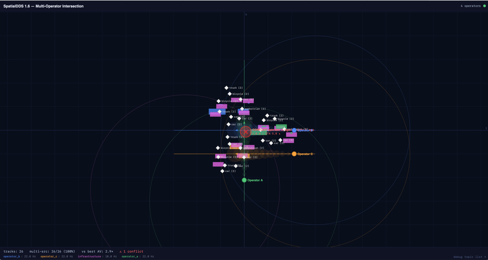

Robots, vehicles, base stations, AR/XR devices, IoT sensors, and digital twins all produce spatial data — detections, poses, maps, zones. Today each domain invents its own formats and transport. SpatialDDS provides a shared, typed, open protocol so spatial data flows across domains and operators without per-integration custom work — the interoperability layer for spatial computing.

Three vehicle fleets and a 6G base station share typed Detection3D messages on a SpatialDDS bus. A fusion service correlates detections across sources, publishes fused tracks with provenance, and detects trajectory conflicts in real time.
ROS 2 has sensor_msgs, V2X has BSM/CAM, IoT has custom JSON. None define typed 3D detections, map alignments, or spatial zones that work across all three.
Existing stacks assume single-operator control. When Fleet A and Fleet B share an intersection, there's no standard for topic namespacing, provenance, or trust boundaries.
6G base stations will be sensors. No protocol connects their radar/beam observations to robot perception stacks. Custom APIs per vendor, per deployment.
New participants can't ask "who has mapped this area?" or "which sensors cover this intersection?" Discovery is either manual config or nonexistent.
Schema-enforced types for every spatial concept — not opaque bytes or ad hoc JSON. Every consumer knows exactly what fields exist, what they mean, and how to interpret them.
FrameRef by UUID with transform chains. Multiple maps, multiple robots, multiple operators — all linked by typed transforms with uncertainty. No more "base_link" collisions.
Participants announce what they sense and where. Consumers query by spatial region. Late joiners discover the network without manual configuration.
Source provenance, uncertainty, entity correlation. A fusion service consumes Detection3D from N sources and publishes FusedTrack — without knowing the sources' internals.
Maps go from BUILDING to OPTIMIZING to STABLE. Inter-map alignments carry evidence and revision numbers. Zone state tracks occupancy in real time.
Built on OMG DDS with configurable QoS — BEST_EFFORT for high-rate sensors, RELIABLE for detections, TRANSIENT_LOCAL for metadata. Peer-to-peer, no central broker required.
Record multi-source spatial streams. Replay for re-analysis. Ingest into ML training pipelines (LeRobot, Open X-Embodiment). Visualize in Foxglove.
Translate sensor_msgs and vision_msgs. Operator-scoped UUIDv5 frames solve tf2 collisions. Separate DDS domains — zero interference with your robot stack.
Edge-to-cloud over Mosquitto or AWS IoT Core. QoS mapping, retained messages for metadata, per-operator topic policies. Loop prevention built in.
Client-driven subscriptions with glob patterns. Topic discovery. Rate limiting. Bidirectional — browser apps can publish back. Built-in debug dashboard.
docker compose up runs locally in 30 seconds — synthetic multi-operator intersection data, fusion service, web dashboard. ./deploy.sh deploys the same stack to AWS Fargate in 5 minutes — ALB with WebSocket, all four bridges, ~$2.50/day. Same Docker image, same DDS domain, same dashboard.
14 profiles · 60+ IDL types · 214 conformance checks across 5 public datasets · Core, sensing, discovery, anchors, mapping, semantics, events, and provisional profiles for RF beam and radio fingerprinting.
Every world model — learned dynamics, foundation models for robotics, digital twins, planning agents — needs structured, real-time observations of the physical world. The model architecture is advancing rapidly. The infrastructure for connecting models to reality is not. SpatialDDS fills that gap.
SpatialDDS carries observations and predictions.
Not episodes. Not rewards. Not latent representations.
Those belong to the ML ecosystem — connected through bridges.